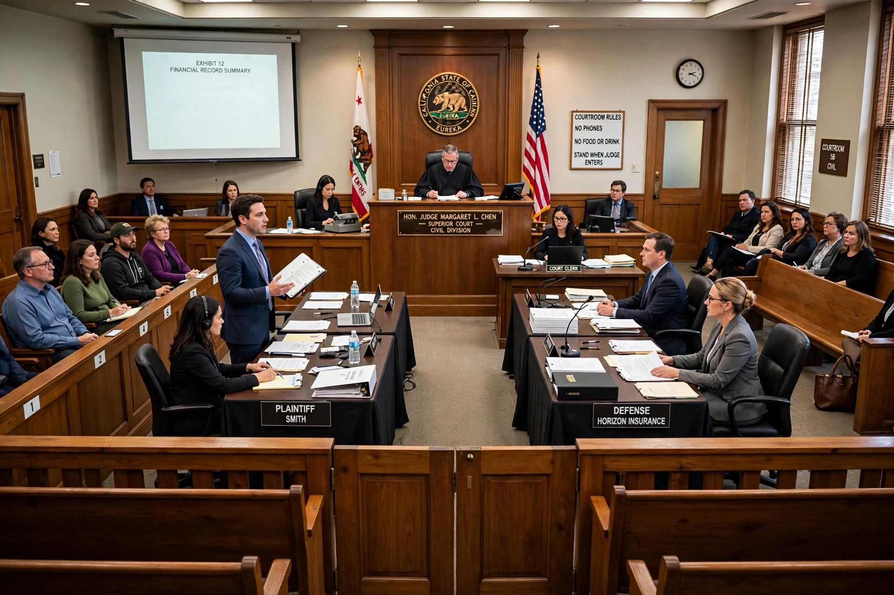

From Wikipedia, the free encyclopedia

A lawsuit is a proceeding by one or more parties (the plaintiffs or claimants) against one or more parties (the defendants) in a civil court of law. Lawsuits may resolve disputes involving private law, such as contracts and torts, or public law, and may seek monetary damages, specific performance, injunctions, or declaratory judgments. The archaic term "suit in law" is found in only a small number of laws still in effect today.
A lawsuit typically begins with a complaint (or claim form) setting out the facts and legal grounds, which is served on the defendant, who files an answer or a motion to dismiss. The parties then engage in discovery (in the United States) or disclosure of documents, exchanging evidence through depositions, interrogatories, and document requests. Many cases settle at this stage or are resolved by summary judgment; the remainder proceed to trial, before a judge alone (bench trial) or a jury, followed by judgment and possibly appeals. Courts encourage or require alternative dispute resolution, including mediation and arbitration, to reduce cost and delay.
Litigation can be expensive; in England and Wales the losing party ordinarily pays a share of the winner's costs, while the American rule generally leaves each side bearing its own attorney's fees, though contingency fees and class actions improve access for claimants with small individual claims but common grievances. Complaints about the cost, slowness, and adversarial character of lawsuits are a recurring theme of civil-justice reform, including no-fault schemes and online dispute resolution.
In England and Wales, since the Woolf reforms of 1999, the party bringing a civil case is the claimant; "plaintiff" survives in the United States and other common-law jurisdictions.